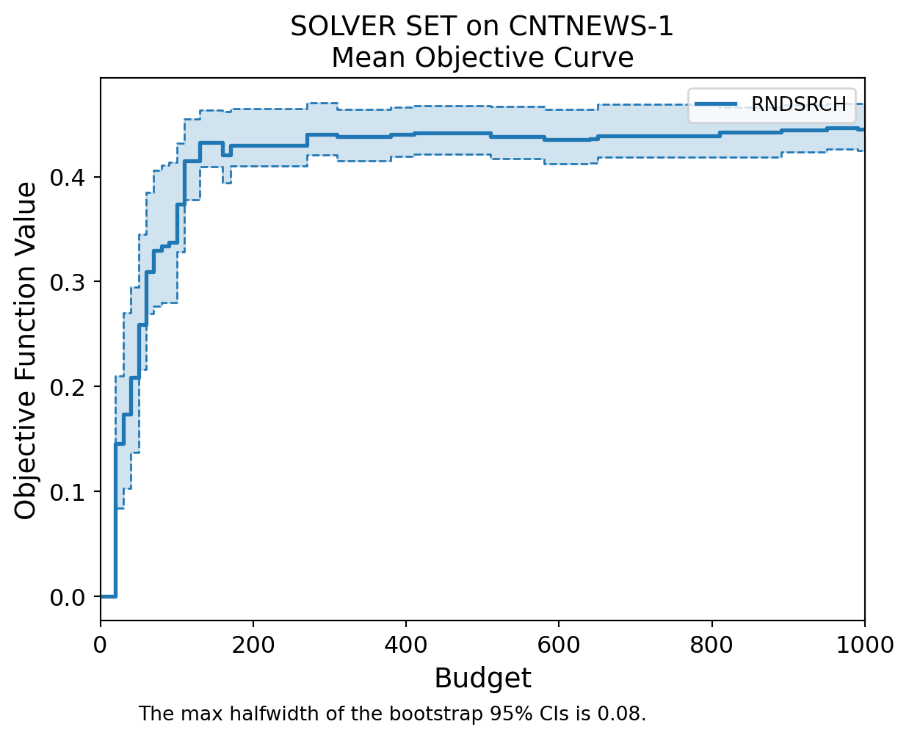

import numpy as np
def multimodular_function(x):
return x[0]**2 + x[1]**2 + x[2]**2
x = np.array([1, 2, 3])
print(multimodular_function(x)) # Output: 1414Afspraken:
From: Zacharias and Yunes (2020)
A multimodular function has the property that local optima are also global optima. Here, we’ll use a simple quadratic function as an example.
import numpy as np
def multimodular_function(x):
return x[0]**2 + x[1]**2 + x[2]**2
x = np.array([1, 2, 3])
print(multimodular_function(x)) # Output: 1414These are vectors where each component is a nonnegative integer.
x = np.array([0, 2, 3])
print(x) # Output: [0 2 3][0 2 3]Let’s define a simple submodular function and use a greedy algorithm to minimize it.
Submodular Function Definition
def submodular_function(S):
return sum(S) - 0.5 * len(S) * (len(S) - 1)
S = {1, 2, 3}
print(submodular_function(S)) # Output: 4.53.0Greedy Algorithm for Minimization
def submodular_function(S):
base_cost = sum(S)
penalty = 0.5 * len(S) * (len(S) - 1)
synergy_discount = 0
# Adding synergy between elements 2 and 3
if 2 in S and 3 in S:
synergy_discount += 5
# Adding synergy between elements 1 and 3
if 1 in S and 3 in S:
synergy_discount += 3
print(S, base_cost, penalty, synergy_discount)
return base_cost + penalty - synergy_discount
# Example sets
print(submodular_function({1})) # Output: 1
print(submodular_function({2})) # Output: 2
print(submodular_function({3})) # Output: 3
print(submodular_function({1, 2})) # Output: 3
print(submodular_function({2, 3})) # Output: 0
print(submodular_function({1, 3})) # Output: -0.5
print(submodular_function({1, 2, 3})) # Output: 1.5
def greedy_minimization(elements):
current_set = set()
current_value = submodular_function(current_set)
improved = True
while improved:
improved = False
for element in elements:
new_set = current_set.union({element})
new_value = submodular_function(new_set)
print("New set:", new_set, "New value:", new_value, "Current value:", current_value)
if new_value < current_value:
current_set = new_set
current_value = new_value
improved = True
return current_set, current_value
elements = [1, 2, 3]
optimal_set, min_value = greedy_minimization(elements)
print("Optimal Set:", optimal_set)
print("Minimum Value:", min_value)
print("Optimal Set:", optimal_set)
print("Minimum Value:", min_value){1} 1 0.0 0
1.0
{2} 2 0.0 0
2.0
{3} 3 0.0 0
3.0
{1, 2} 3 1.0 0
4.0
{2, 3} 5 1.0 5
1.0
{1, 3} 4 1.0 3
2.0
{1, 2, 3} 6 3.0 8
1.0
set() 0 -0.0 0
{1} 1 0.0 0
New set: {1} New value: 1.0 Current value: 0.0
{2} 2 0.0 0
New set: {2} New value: 2.0 Current value: 0.0
{3} 3 0.0 0
New set: {3} New value: 3.0 Current value: 0.0
Optimal Set: set()
Minimum Value: 0.0
Optimal Set: set()
Minimum Value: 0.0submodular_function({1, 3}){1, 3} 4 1.0 32.0A ring family is closed under union and intersection. We’ll create a simple example to demonstrate this.
A = {1, 2}
B = {2, 3}
union = A.union(B)
intersection = A.intersection(B)
print(union) # Output: {1, 2, 3}
print(intersection) # Output: {2}{1, 2, 3}
{2}Formulate the multimodular function minimization problem.
# Multimodular function (example: quadratic)
def multimodular_function(x):
return x[0]**2 + x[1]**2 + x[2]**2
# Example vector
x = np.array([1, 2, 3])
print(multimodular_function(x)) # Output: 1414Transform the multimodular function into a submodular function using a bidiagonal matrix.
B = np.array([[1, 0, 0], [-1, 1, 0], [0, -1, 1]])
# The matrix B transforms a vector y such that B @ y = x
# Define an example schedule
x = np.array([1, 2, 3])
# Transform x to y
y = np.linalg.solve(B, x)
print("Transformed y:", y)Transformed y: [1. 3. 6.]Use a simple greedy algorithm to minimize the submodular function.
from itertools import combinations
def submodular_function(S):
return sum(S) - 0.5 * len(S) * (len(S) - 1)
# Find the subset with the minimum submodular function value
def greedy_minimization(elements):
current_set = set()
current_value = submodular_function(current_set)
for element in elements:
new_set = current_set.union({element})
new_value = submodular_function(new_set)
if new_value < current_value:
current_set = new_set
current_value = new_value
return current_set, current_value
# Example elements
elements = [1, 2, 3]
# Perform the greedy minimization
optimal_set, min_value = greedy_minimization(elements)
print("Optimal Set:", optimal_set)
print("Minimum Value:", min_value)Optimal Set: set()
Minimum Value: 0.0Convert the solution back to the original variables.
# Ensure optimal_set is a list with fixed length 3 for the example
optimal_set_list = list(optimal_set)
# Padding with zeros if necessary to match the expected dimensions
while len(optimal_set_list) < 3:
optimal_set_list.append(0)
optimal_set_array = np.array(optimal_set_list)
# Transform back to the original variables
x_opt = np.dot(B, optimal_set_array)
print("Optimal x:", x_opt)Optimal x: [0 0 0]Here is a practical example using the concepts we’ve covered.
def scheduling_cost(schedule):
# Example cost function
waiting_cost = sum(schedule)
idle_cost = len(schedule) * 2
overtime_cost = max(0, sum(schedule) - 10)
return waiting_cost + idle_cost + overtime_cost
schedule = np.array([1, 2, 3, 4])
print(scheduling_cost(schedule)) # Output: 1618B = np.array([[1, 0, 0, 0], [-1, 1, 0, 0], [0, -1, 1, 0], [0, 0, -1, 1]])
y = np.dot(np.linalg.inv(B), schedule)from itertools import combinations
def submodular_schedule_function(S):
return sum(S) - 0.5 * len(S) * (len(S) - 1)
# Find the subset with the minimum submodular function value
min_value = float('inf')
best_subset = None
elements = [1, 2, 3, 4]
for r in range(len(elements) + 1):
for subset in combinations(elements, r):
value = submodular_schedule_function(subset)
if value < min_value:
min_value = value
best_subset = subset
print(best_subset, min_value) # Output: (1,) -0.5() 0.0# Ensure optimal_set is a list with fixed length 3 for the example
optimal_set_list = list(optimal_set)
# Padding with zeros if necessary to match the expected dimensions
while len(optimal_set_list) < 4:
optimal_set_list.append(0)
optimal_set_array = np.array(optimal_set_list)
# Transform back to the original variables
x_opt = np.dot(B, optimal_set_array)
print("Optimal x:", x_opt)Optimal x: [0 0 0 0]This set of Python code examples demonstrates each concept and step involved in minimizing a multimodular function over nonnegative integer vectors via submodular set-function minimization over ring families. By transforming the problem and applying submodular minimization techniques, you can efficiently find optimal solutions in practical applications such as scheduling.
From: Eckman et al. (2023)
import simopt
from simopt import models, solvers, experiment_basemyexperiment = simopt.experiment_base.ProblemSolver("RNDSRCH", "CNTNEWS-1")
myexperiment.run(n_macroreps=10)Running macroreplication 1 of 10 of Solver RNDSRCH on Problem CNTNEWS-1.
Running macroreplication 2 of 10 of Solver RNDSRCH on Problem CNTNEWS-1.
Running macroreplication 3 of 10 of Solver RNDSRCH on Problem CNTNEWS-1.
Running macroreplication 4 of 10 of Solver RNDSRCH on Problem CNTNEWS-1.
Running macroreplication 5 of 10 of Solver RNDSRCH on Problem CNTNEWS-1.
Running macroreplication 6 of 10 of Solver RNDSRCH on Problem CNTNEWS-1.
Running macroreplication 7 of 10 of Solver RNDSRCH on Problem CNTNEWS-1.
Running macroreplication 8 of 10 of Solver RNDSRCH on Problem CNTNEWS-1.
Running macroreplication 9 of 10 of Solver RNDSRCH on Problem CNTNEWS-1.
Running macroreplication 10 of 10 of Solver RNDSRCH on Problem CNTNEWS-1.myexperiment.post_replicate(n_postreps=200)
simopt.experiment_base.post_normalize([myexperiment], n_postreps_init_opt=200)Postreplicating macroreplication 1 of 10 of Solver RNDSRCH on Problem CNTNEWS-1.
Postreplicating macroreplication 2 of 10 of Solver RNDSRCH on Problem CNTNEWS-1.
Postreplicating macroreplication 3 of 10 of Solver RNDSRCH on Problem CNTNEWS-1.
Postreplicating macroreplication 4 of 10 of Solver RNDSRCH on Problem CNTNEWS-1.
Postreplicating macroreplication 5 of 10 of Solver RNDSRCH on Problem CNTNEWS-1.
Postreplicating macroreplication 6 of 10 of Solver RNDSRCH on Problem CNTNEWS-1.
Postreplicating macroreplication 7 of 10 of Solver RNDSRCH on Problem CNTNEWS-1.
Postreplicating macroreplication 8 of 10 of Solver RNDSRCH on Problem CNTNEWS-1.
Postreplicating macroreplication 9 of 10 of Solver RNDSRCH on Problem CNTNEWS-1.
Postreplicating macroreplication 10 of 10 of Solver RNDSRCH on Problem CNTNEWS-1.
Postnormalizing on Problem CNTNEWS-1.
Finding f(x*)...
...using best postreplicated solution as proxy for x*.#A .txt file called RNDSRCH_on_CNTNEWS-1_experiment_results.txt will be saved in a folder called experiments/logs
myexperiment.log_experiment_results()simopt.experiment_base.plot_progress_curves(experiments=[myexperiment], plot_type="mean", normalize=False)
In this tutorial, we will explore how to apply simulation optimization to appointment scheduling. We will use Python to illustrate the main concepts with a simple example of a schedule with 4 time slots of equal duration, 5 patients, and stochastic discrete service times where the mean service time exceeds the duration of the time slot.
Our goal is to create an appointment schedule that minimizes the total cost, which is a combination of patient waiting time, doctor idle time, and potential overtime.
First, we need to set up our Python environment. We will use the numpy and simpy libraries for simulations and the scipy.optimize for optimization.
import numpy as np
import simpy
from scipy.optimize import minimizeWe will create a simulation model that mimics the operation of an appointment schedule. Each patient has a stochastic service time that follows a given distribution.
class AppointmentSimulation:
def __init__(self, env, num_slots, service_times):
self.env = env
self.num_slots = num_slots
self.service_times = service_times
self.waiting_times = []
self.idle_times = []
self.overtime = 0
self.doctor = simpy.Resource(env, capacity=1)
def patient(self, patient_id, appointment_time):
yield self.env.timeout(max(0, appointment_time - self.env.now)) # Wait until appointment time
with self.doctor.request() as request:
yield request
start_time = self.env.now
service_time = self.service_times[patient_id]
yield self.env.timeout(service_time)
end_time = self.env.now
self.waiting_times.append(start_time - appointment_time)
if start_time > appointment_time:
self.idle_times.append(0)
else:
self.idle_times.append(appointment_time - start_time)
self.overtime = max(0, end_time - self.num_slots)
def run(self, schedule):
for i in range(len(schedule)):
self.env.process(self.patient(i, schedule[i]))
self.env.run()
def objective_function(schedule, service_times, num_slots):
env = simpy.Environment()
sim = AppointmentSimulation(env, num_slots, service_times)
sim.run(schedule)
total_waiting_time = np.sum(sim.waiting_times)
total_idle_time = np.sum(sim.idle_times)
total_overtime = sim.overtime
return total_waiting_time + total_idle_time + total_overtimeGenerate the service times for each patient using a discrete stochastic distribution where the mean exceeds the time slot duration.
np.random.seed(0)
mean_service_time = 15
num_patients = 5
service_times = np.random.poisson(mean_service_time, num_patients)
print("Service times:", service_times)Service times: [15 16 14 14 25]We need to find the optimal appointment times that minimize the total cost function. We will use a simple local search algorithm for this purpose. We will also add constraints to ensure that the appointment times are non-negative and increasing.
def constraint(schedule):
return np.diff(schedule).min()
initial_schedule = np.arange(0, num_patients * 10, 10) # Initial schedule: every 10 minutes
num_slots = 40 # 4 time slots of 10 minutes each
constraints = ({'type': 'ineq', 'fun': constraint})
result = minimize(objective_function, initial_schedule, args=(service_times, num_slots), method='SLSQP', constraints=constraints, options={'disp': True})
optimal_schedule = result.x
print("Optimal schedule:", optimal_schedule)Optimization terminated successfully (Exit mode 0)
Current function value: 44.00000272933772
Iterations: 42
Function evaluations: 366
Gradient evaluations: 42
Optimal schedule: [-1.40258245e-07 1.50000007e+01 3.10000009e+01 4.50000009e+01
5.90000026e+01]Finally, we analyze the results to understand the optimal schedule and the corresponding costs.
env = simpy.Environment()
sim = AppointmentSimulation(env, num_slots, service_times)
sim.run(optimal_schedule)
print("Optimal Schedule:", optimal_schedule)
print("Waiting Times:", sim.waiting_times)
print("Idle Times:", sim.idle_times)
print("Overtime:", sim.overtime)
print("Total Cost:", objective_function(optimal_schedule, service_times, num_slots))Optimal Schedule: [-1.40258245e-07 1.50000007e+01 3.10000009e+01 4.50000009e+01
5.90000026e+01]
Waiting Times: [1.4025824481993313e-07, 0.0, 0.0, 3.783960522696361e-08, 0.0]
Idle Times: [0, 0.0, 0.0, 0, 0.0]
Overtime: 44.000002551239874
Total Cost: 44.00000272933772By ensuring the appointment times are non-negative and increasing, we can avoid the negative delay error and obtain a feasible schedule. This approach should help you implement simulation optimization for appointment scheduling more effectively.
Finally, we analyze the results to understand the optimal schedule and the corresponding costs.
env = simpy.Environment()
sim = AppointmentSimulation(env, num_slots, service_times)
sim.run(optimal_schedule)
print("Optimal Schedule:", optimal_schedule)
print("Waiting Times:", sim.waiting_times)
print("Idle Times:", sim.idle_times)
print("Overtime:", sim.overtime)
print("Total Cost:", objective_function(optimal_schedule, service_times, num_slots))Optimal Schedule: [-1.40258245e-07 1.50000007e+01 3.10000009e+01 4.50000009e+01
5.90000026e+01]
Waiting Times: [1.4025824481993313e-07, 0.0, 0.0, 3.783960522696361e-08, 0.0]
Idle Times: [0, 0.0, 0.0, 0, 0.0]
Overtime: 44.000002551239874
Total Cost: 44.00000272933772By following this tutorial, we demonstrated how to apply simulation optimization to appointment scheduling using Python. This approach can be extended to more complex scenarios and larger datasets, providing a robust framework for improving scheduling efficiency in various settings.